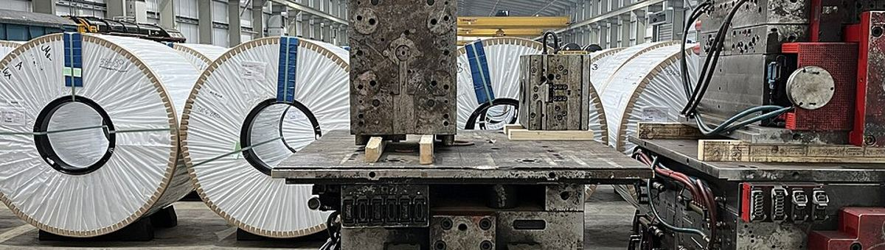
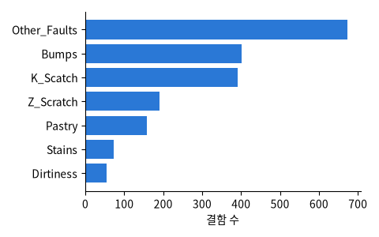

사진: Adrian Taylor · CC BY-SA 2.0UCI, Semeion 연구소 (Buscema, Terzi & Tastle, 2010). 강판 결함 1,941개, 결함 영역의 위치 · 면적 · 둘레 · 밝기 · 강판 종류 · 두께 등 27개, 결함 7종류

| X_Minimum | Y_Minimum | Pixels_Areas | Sum_of_Luminosity | Steel_Plate_Thickness | TypeOfSteel_A300 | fault |
|---|---|---|---|---|---|---|
| 805 | 273,908 | 16 | 2121 | 50 | 0 | Stains |
| 41 | 4,401,486 | 5533 | 584,291 | 40 | 0 | K_Scatch |
| 1 | 115,072 | 15,650 | 1,732,196 | 40 | 0 | K_Scatch |
| 244 | 923,170 | 709 | 83,627 | 70 | 1 | Z_Scratch |
| 95 | 961,065 | 551 | 53,142 | 80 | 1 | Bumps |
| 1323 | 68,445 | 330 | 33,449 | 120 | 0 | Dirtiness |
| 열 | 종류 | 빈칸 | 고유값 수 | 범위 · 대표값 |
|---|---|---|---|---|
| X_Minimum | 숫자 | 0 | 962 | 0 ~ 1705 (평균 571.1) |
| X_Maximum | 숫자 | 0 | 994 | 4 ~ 1713 (평균 618) |
| Y_Minimum | 숫자 | 0 | 1939 | 6712 ~ 12,987,661 (평균 1,650,684.9) |
| Y_Maximum | 숫자 | 0 | 1940 | 6724 ~ 12,987,692 (평균 1,650,738.7) |
| Pixels_Areas | 숫자 | 0 | 920 | 2 ~ 152,655 (평균 1,893.9) |
| X_Perimeter | 숫자 | 0 | 399 | 2 ~ 10,449 (평균 111.9) |
| Y_Perimeter | 숫자 | 0 | 317 | 1 ~ 18,152 (평균 82.97) |
| Sum_of_Luminosity | 숫자 | 0 | 1909 | 250 ~ 11,591,414 (평균 206,312.1) |
| Minimum_of_Luminosity | 숫자 | 0 | 161 | 0 ~ 203 (평균 84.55) |
| Maximum_of_Luminosity | 숫자 | 0 | 100 | 37 ~ 253 (평균 130.2) |
| Length_of_Conveyer | 숫자 | 0 | 84 | 1227 ~ 1794 (평균 1,459.2) |
| TypeOfSteel_A300 | 숫자 | 0 | 2 | 0 ~ 1 (평균 0.4003) |
| TypeOfSteel_A400 | 숫자 | 0 | 2 | 0 ~ 1 (평균 0.5997) |
| Steel_Plate_Thickness | 숫자 | 0 | 24 | 40 ~ 300 (평균 78.74) |
| Edges_Index | 숫자 | 0 | 1387 | 0 ~ 0.9952 (평균 0.3317) |
| Empty_Index | 숫자 | 0 | 1338 | 0 ~ 0.9439 (평균 0.4142) |
'Other_Faults' (기타) 가 가장 많다
종류마다 크기가 수십 배 다르다
| ① 한 행 | 결함 하나 |
| ② 입력 X | 결함 영역의 크기 · 모양 · 밝기 · 강판 종류 · 두께 (27개) |
| ③ 출력 y | 결함 종류 7가지 |
| ④ 평가지표 | 정확도 + 종류별 재현율 |
| ⑤ 기준선 | 가장 흔한 종류 |
문제를 정할 때 처음 채워 보는 칸들입니다. 여기서 끝이 아니라, 시험 데이터를 어떻게 나눌지 · 틀렸을 때 손해가 얼마인지 · 예측 시점에 정말 알 수 있는 값인지 같은 칸을 더 붙일수록 좋은 문제가 됩니다.
baseline (always 'Other_Faults'): accuracy 34.6% random forest : accuracy 80.3%
누가, 왜, 어떻게 만든 데이터인지 직접 확인해 보세요.
인턴 · 산학협력 · 프로젝트 주제를 고를 때 참고하세요 (일반적인 예시).